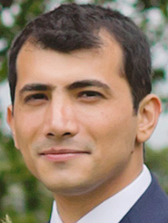

I am a software engineer at Adobe, business platform services. I currently work on a resilient distributed message dissemination system with guaranteed sequential consistency and at-least-once delivery.
Previously, I was a postdoctoral research fellow at the university of St Andrews, school of Computer Science, working on Digitising Scotland, a project constructing a linked genealogy of 24 million Scottish historical records since 1855.
Prior to that, I worked on Qraqrbox, a university spin-off company that provides a distributed delay-tolerant content delivery platform powered by renewable energies.
In my PhD, I studied algorithmic adaptation of routing state maintenance in structured Peer-to-Peer (P2P) overlays, where the scope of adaptation is enlarged to include the maintenance algorithm itself rather than being limited to the parameter values of a single algorithm. My thesis illustrates a Key-based Routing (KBR) system that automatically and dynamically adapts the structure of its maintenance algorithm under varying workload and churn patterns, and outperforms KBR systems with a fixed maintenance algorithm such as Chord in terms of lookup correctness, lookup latency and bandwidth consumption. I had the privilege of completing my PhD under the supervision of Dr. Graham Kirby and Prof. Alan Dearle. My study was generously funded by Scottish Informatics and Computer Science Alliance (SICSA).
Prior to my PhD, I received my MSc in “Advanced Computer Science” from the university of St Andrews. My Master’s thesis, titled “Trombone: A Zero-Hop, Zero-Configuration Peer-to-Peer Routing Algorithm”, was supervised by Prof. Alan Dearle, which led to my PhD studies. I was kindly awarded the 2010 Master’s class medal.
A shortlist of my projects:
I delivered the CS5033 Software Architecture module in 2014/15 second semester.
I regularly delivered talks on code quality. I have been a teaching assistant for numerous modules during my PhD.